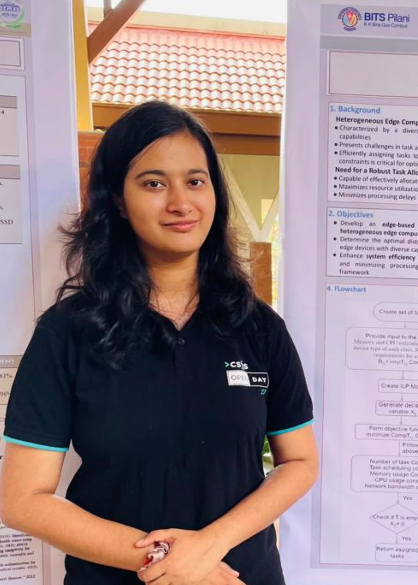

PhD Researcher in Edge Computing, BITS Pilani Goa Project Associate, NIT Karnataka, Surathkal

Saumya Mathkar is a PhD researcher at BITS Pilani, K K Birla Goa Campus, working in the area of Edge Computing and Optimizations. Her research focuses on intelligent task scheduling, GPU-aware resource allocation, and distributed machine learning tasks in heterogeneous edge environments.
Saumya Mathkar, Pinki Pinki, and Vinayak Naik, “RL-SelfMap: A Reinforcement Learning Scheduler for Machine Learning Tasks on a Cluster of Heterogeneous Edge Devices,” in 23rd EAI International Conference on Mobile and Ubiquitous Systems: Computing, Networking and Services (MobiQuitous), Beppu, Japan, EAI, 2026.
Saumya Mathkar, Pinki Pinki, and Vinayak Naik, “Memory-aware Hierarchical Scheduling of ML Tasks in Heterogeneous Clusters of Edge Computing Devices with GPUs,” in 2026 18th International Conference on Communication Systems and Networks (COMSNETS), Bengaluru, India, pp. 51–59, IEEE, 2026.
Saumya Mathkar, Shreya Aiyer, Yashovardhan Bapat, Pinki Pinki, Arnab K. Paul, and Vinayak Naik, “Scheduling Big Machine Learning Tasks on Clusters of Heterogeneous Edge Devices,” in 2025 17th International Conference on Communication Systems and Networks (COMSNETS), Bengaluru, India, pp. 439–447, IEEE, 2025.
Saumya Mathkar, Prakhar Karsh, Udit Baluja, Surjya Ghosh, Sougata Sen, and Vinayak Naik, “A smartphone-based application to detect Parkinson’s disease using audio,” in 2023 15th International Conference on Communication Systems and Networks (COMSNETS), Bengaluru, India, pp. 177–179, IEEE, 2023.
Saumya Mathkar, Shreya Aiyer, Yashovardhan Bapat, Pinki Pinki, Arnab K. Paul, and Vinayak Naik, “Adaptive Task Allocation System for Heterogeneous Edge Devices,” Provisional Patent Application No. 202411042163, Controller General of Patents, Designs & Trade Marks, India, filed May 30, 2024.
Feel free to reach out about research collaborations.